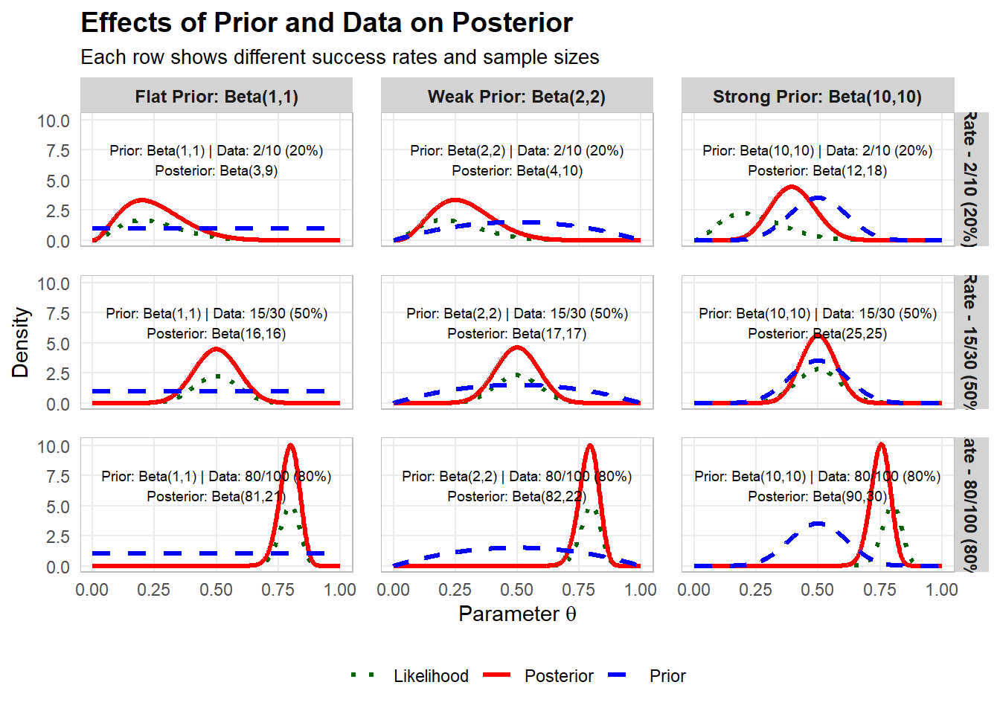
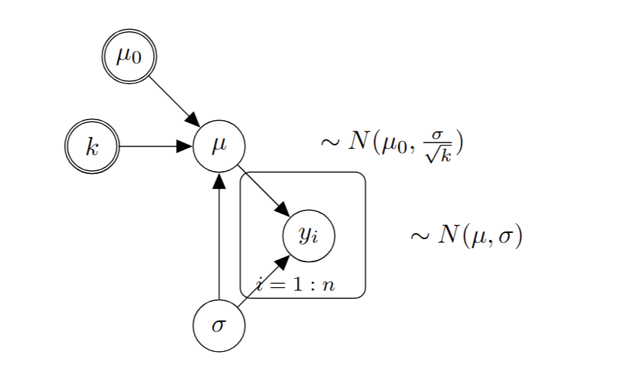

Conjugate models
BADT
Conjugate model
We say that \(p(\pi)\) is a conjugate prior for \(L(\pi,y)\) if the posterior,
\(p(\pi|y)\), is from the same model family as the prior.
The prior is conjugate with respect to a particular likelihood function.
This property is called “conjugacy” and was introduced by Raiffa & Schlaifer (2000), first edition published in 1961.
Conjugate models are still useful. They are used to calculate probability intervals, for updating categorical nodes in binary Bayesian networks.
They are limited to simple Bayesian models.
Raiffa H, Schlaifer R. 2000. Applied statistical decision theory. Wiley classics library ed. New York: Wiley.
Beta-Binomial
Observable: number of successes \(Y\) out of \(N\) independent trials
Observations(data): \(y,n\) (random sample from \(Y\) where \(N=n\))
Data generating process: \(Y|\pi,N \sim Bin(N,\pi)\)
\[p(y|\pi,n) = \frac{n!}{y!(n-y)!}=\pi^y(1-\pi)^{n-y}\]
Parameter: \(\pi\)
Likelihood:
\[L(\pi,y,n) = \frac{n!}{y!(n-y)!}=\pi^y(1-\pi)^{n-y}\]
log likelihood
\[l(\pi,y,n) = \log L(\pi,y,n) = \log n! - \log y! - \log (n-y)! + y \log \pi + (n-y) \log (1-\pi)\]
Simplification by dropping constant that do not depend on parameter
\(l(\pi,y,n) \propto y \log \pi + (n-y) \log (1-\pi)\)
Prior: \(\pi \sim Beta(\alpha,\beta)\)
Hyper-parameters: \(\alpha\), \(\beta\)
Posterior:: \(\pi|y,n \sim Beta(\alpha+y,\beta+n-y)\)
Impact on posterior from prior and data
Reparameterisation
Data generating process: \(Y|\pi,N \sim Bin(N,\pi)\)
Let us look at an alternative parameterisation of the beta distribution
Let \(\alpha=ts\) and \(\beta=(1-t)s\)
The new parameters \(t\) and \(s\) can be seen as expected relative frequency and “sample size”, respectively.
Prior: \(\pi \sim Beta(ts,(1-t)s)\)
Hyper-parameters: \(t\), \(s\)
Posterior: \(\pi|y,n \sim Beta(ts+y,(1-t)s+n-y)\)
Bayesian learning - Sequential updating
Bayesian inference can be done sequentially, by using the posterior in a previous step as prior in the next step
Prior step 1: \(\pi|s,t \sim Beta(ts,(1-t)s)\)
Posterior step 1: \(\pi|y_1,n_1,s_1,t_1 \sim Beta(t_1s_1+y_1,(1-t_1)s_1+n_1-y_1)\)
Posterior expected relative frequency is
\[\frac{t_1s_1+y_1}{t_1s_1+y_1+(1-t_1)s_1+n_1-y_1}=\frac{t_1s_1+y_1}{s_1+n_1}\]
Prior step 2: \(\pi|s_2,t_2 \sim Beta(t_2s_2,(1-t_2)s_2)\)
Hyperparameters are the expected relative frequency \(t_2=\frac{t_1s_1+y_1}{s_1+n_1}\) and “sample size” \(s_2 = s_1+n_1\)
Posterior step 2: \(\pi|y_2,n_2,s_2,t_2 \sim Beta(t_2s_2+y_2,(1-t_2)s_2+n_2-y_2)\)
Hyperparameters for step 3 are the expected relative frequency \(t_3=\frac{t_2s_2+y_2}{s_2+n_2}=\frac{t_1s_1 + y_1 + y_2}{s_1+n_1+n_2}\) and “sample size” \(s_3 = s_2+n_2=s_1+n_1+n_2\)
This also demonstrates the property of data-order invariance which states that if data is conditionally independent on the model, the order of updating has no effect on the final posterior.
Parametric inference
Is it possible to test hypothesis in Bayesian analysis?
Bayes factor
Bayesian p-value
Bayesian confidence interval
Bayesian model selection
Using observed data to choose between two probabilistic models, \(M_0\) and \(M_1\).
\[\underbrace{\frac{p(M_1|data)}{p(M_0|data)}}_{\text{posterior ratio}}=\underbrace{\frac{p(M_1)}{p(M_0)}}_{\text{prior ratio}}\underbrace{\frac{p(data|M_1)}{p(data|M_0)}}_{\text{bayes factor}}\]
https://www.statlect.com/fundamentals-of-statistics/posterior-odds-ratio
Using observed data to choose between two probabilistic models, \(M_0\) and \(M_1\) that differ in complexity. For example, consider teh binomial model: \(M_0\) could be that the parameter \(\pi\) takes a specific value \(\pi_0\), whereas \(M_1\) is that it can be any value in the interval \([0,1]\).
The probability for data under \(M_0\), \(p(data|M_0)\), is found by using \(\pi=\pi_0\) in the probabilistic model for data.
The probability for data under \(M_0\), \(p(data|M_1)\) is found by specifying a prior for \(\pi\), do Bayesian updating, and use the posterior \(\pi|data\) to calcualte the expected probability for data under \(M_1\)
\[p(data|M_1) = \int_\infty^\infty p(data|\theta,M_1)p(\theta|M_1)d\theta\]
Conjugate models and the exponential family
Analytic results for the posterior distribution can always be obtained for a class of distributions known as exponential family distributions, provided that conjugate priors are used.
Exponential family distributions can be written in the form
\[p(\mathbf{y}|\mathbf{\eta})=f(\mathbf{y})\exp \left[\mathbf{\eta}^T\mathbf{s(y)} + \psi(\mathbf{\eta})\right]\] where \(\mathbf{\eta}\) is a vector of natural parameters, \(f(\mathbf{y})\) is an arbitrary function that depends only on \(\mathbf{y}\), \(\mathbf{s(y)}\) is a vector containing the sufficient statistics for the data \(\mathbf{y}\), and \(\psi(\mathbf{\eta})\) is the logarithm of the normalizing constant.
For example
\(\eta = \log \frac{\theta}{1-\theta}\)
\(\psi(\eta) = \log (1+\exp(\eta))=-\log (1-\theta)\)
For any exponential family distribution, there is a corresponding family of conjugate priors with \(p(\mathbf{\eta}|\mathbf{y}) \propto \exp \left[ \mathbf{\eta}^T\nu + \lambda \psi(\mathbf{\eta})\right]\).
Conjugacy can be demonstrated by observing that the posterior is given by
\(p(\mathbf{\eta}|\mathbf{y}) \propto p(\mathbf{y}|\mathbf{\eta})p(\mathbf{\eta})\)
Normal-Normal conjugate model
Observable: \(Y\)
Observations(data): \(\mathbf{y}=(y_1,\ldots,y_n)\) (random sample from \(Y\))
Data generating process: \(Y|\mu,\sigma \sim N(\mu,\sigma)\)
\[p(\mathbf{y}|\mu,\sigma) = \prod_{i=1}^n \frac{1}{\sqrt{2\pi\sigma}} \exp \left[-\frac{(y_i-\mu)^2}{2\sigma^2} \right]\]
Parameters: \(\mu\), \(\sigma\) (we assume \(\sigma\) is known)
Likelihood:
\[L(\mu,\mathbf{y}) \propto \prod \exp \left[-\frac{(y_i-\mu)^2}{2\sigma^2} \right] = \exp \left[-\frac{\sum(y_i-\mu)^2}{2\sigma^2} \right] = \exp \left[-\frac{(\bar{y}-\mu)^2}{2\sigma^2/n} \right]\]
log likelihood
\[l(\mu,\mathbf{y}) = \log L(\mu,\mathbf{y}) \propto -\frac{(\bar{y}-\mu)^2}{2\sigma^2/n}\]
Prior:
\[\mu|\sigma \sim N(\mu_0,\frac{\sigma}{\sqrt{k}})\]
Hyper-parameters: \(\mu_0\), \(k\)
Let \(\bar{y}=\frac{1}{n}\sum_{i=1}^n y_i\) be the sample mean and \(s^2 = \frac{1}{n-1}\sum_{i=1}^n (y_i-\bar{y})^2\) be the sample variance.
Posterior:
\[\mu|\sigma,\mathbf{y} \sim N(\frac{k\mu_0+n\bar{y}}{k+n},\frac{\sigma}{\sqrt{(k+n)}})\]

Gamma-Normal conjugate model
Observable: \(Y\)
Observations(data): \(\mathbf{y}=(y_1,\ldots,y_n)\) (random sample from \(Y\))
Data generating process: \(Y|\mu,\sigma \sim N(\mu,\sigma)\)
\[p(\mathbf{y}|\mu,\sigma) = \prod_{i=1}^n \frac{1}{\sqrt{2\pi\sigma}} \exp \left[-\frac{(y_i-\mu)^2}{2\sigma^2} \right]\]
Parameters: \(\mu\), \(\sigma\)
Likelihood:
\[L(\mu,\sigma,\mathbf{y}) = \prod \frac{1}{\sqrt{2\pi\sigma}} \exp \left[-\frac{(y_i-\mu)^2}{2\sigma^2} \right] = \left(\frac{1}{\sqrt{2\pi\sigma}}\right)^n\exp \left[-\frac{(\bar{y}-\mu)^2}{2\sigma^2/n} \right]\]
log likelihood
\[l(\mu,\sigma,\mathbf{y}) = \log L(\mu,\sigma,\mathbf{y}) =-\frac{n}{2}\log (\pi\sigma) -\frac{(\bar{y}-\mu)^2}{2\sigma^2/n}\]
Prior:
\[\mu|\sigma \sim N(\mu_0,\frac{\sigma}{\sqrt{k}})\]
\[\frac{1}{\sigma^2} \sim \Gamma (\alpha_0,\beta_0)\]
Hyper-parameters: \(\mu_0\), \(k\), \(\alpha\), \(\beta\)
Posterior:
\[\mu|\sigma,\mathbf{y} \sim N(\frac{k\mu_0+n\bar{y}}{k+n},\frac{\sigma}{\sqrt{(k+n)}})\]
\[\frac{1}{\sigma^2}|\mathbf{y} \sim \Gamma (\alpha_0+\frac{n}{2},\beta_0+\frac{s^2(n-1)}{2}+\frac{nk}{n+k}\frac{(\bar{y}-\mu_0)^2}{2})\]

List of conjugate models
Example from Bayesian Networks
Bayesian Parameter Estimation in Bayesian Networks (section 17.4 in Koller and Friedman 2009).
A Bayesian Network can be understood as a probability distribution for data that allows specification of a likelihood. BNs were originally developed for categorical or binary nodes linked with edges into network.
The concept was expanded for continuous normally distributed nodes, referred to as Gaussian Networks.
Inference in these networks are of two types:
- Predictive inference: calculation of the probability of query variables (a subset of variables in the network) given evidence defined by an instantiation of a subset of variables in the network.
\[p(\mathbf{Y}|\mathbf{E}=\mathbf{e})\]
- Parametric inference: Inference of the parameters in a network. This can be to estimate Conditional Probability Tables (CPTs) or expected values and variances in Gaussian Networks.
Parametric inference can be done using maximum likelihood estimation.
To perform Bayesian parameter estimation of a Bayesian Network, one has to specify a joint probability distribution of the unknown parameters and observables. Koller and Friedman (2009) refers to it as adding a meta-network for learning. Assumes global parameter independence, i.e. priors for parameters do not depend on each other. This allows taking expectations over parameters when making predictions independently and then combine the results when making predictions.

Koller, D., & Friedman, N. (2009). Probabilistic graphical models: principles and techniques. MIT press. PDF
Demonstration of implementation of priors in Bayesian Networks
BayesFusion
Monte Carlo simulation
Consider the expected value of a function \(g\) of the random variable \(\theta\)
\[E(g(\theta)) = \int_{-\infty}^{\infty} g(\theta)f(\theta)d\theta\]
At best, one can use various approximations of the function to derive the target quantity.
When the number of variables increase, it quickly becomes demanding to calculate the expected value
\[E(g(\theta_1,\theta_2,\ldots)) = \int_{-\infty}^{\infty} g(\theta_1,\theta_2,\ldots)f(\theta_1,\theta_2,\ldots)d\theta_1d\theta_2\cdots\]
Monte Carlo simulation is a numerical method to approximate functions of random variables or processes.
Monte Carlo approximation works provided that there exists a finite expected value and variance of the function, i.e. that \(E(|g(\mathbf{\theta})|) < \infty\) and \(V(g(\mathbf{\theta})) < \infty\)
Some useful theorems
The weak law of large numbers
If \(X_1,\ldots\) are independent and identically distributed random variables with the same expected value \(\mu\), then the average of the random variables converges to the expected value as the number of variables \(n\) goes towards infinity:
\[\bar{X}_n = \frac{1}{n}\sum_{i=1}^n X_i \overset{p}{\rightarrow} \mu\]
Convergence in probability \(p\) is the same thing to say that the average converges to the value \(\mu\) with probability 1.
The strong law of large numbers
Let \(X_1,\ldots\) be a sequence of independent and identically distributed random variables where the expected value of the absolute random variable is finite, i.e. \(E(|X_1|) < \infty\). Let \(E(X_1)=\mu\), then the average of the random variables converges to the expected value as the number of variables \(n\) goes towards infinity:
\[\bar{X}_n = \frac{1}{n}\sum_{i=1}^n X_i \overset{a.s.}{\rightarrow} \mu\]
\(a.s.\) means “almost surely”, and is a stronger type of convergence than convergence in probability.

Reflection from Kadane
Conjugate analysis is neat mathematically when it works. However, the slightest deviation in the specification of the likelihood or prior would destroy the property of conjugacy. Consequently, these results are interesting but far from a usable platform from which to do analyses.
Similarly, large sample theory is nice, but gives little guidance on how large a sample is required for large sample theory to yield good approximations. Since Bayesian analyses can and do deal with small samples as well as large ones (indeed Bayesians can gracefully make decisions with no data at all, relying on their prior), large sample theory is also quite limited in scope.
Because of these limitations, Bayesians now rely heavily on computational methods to find posterior distributions
Kadane, J. B. (2020). Principles of uncertainty 2nd. Chapman and Hall/CRC. PDF